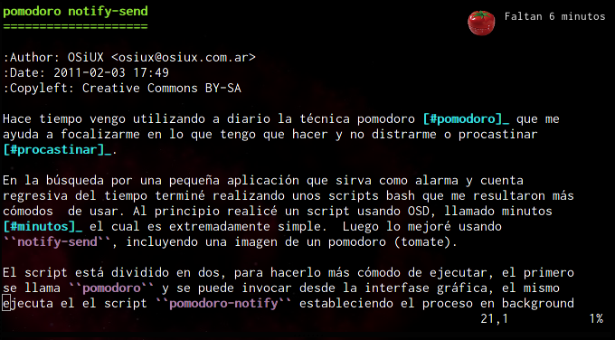

pomodoro notify-send
ABSOLUTELLY NO WARRANTY | CC-BY-SA | OSiUX | .git
Hace tiempo vengo utilizando a diario la técnica pomodoro 1 que me ayuda a focalizarme en lo que tengo que hacer y no distraerme o procastinar [fn:procastinar].
En la búsqueda por una pequeña aplicación que sirva como alarma y cuenta
regresiva del tiempo terminé realizando unos scripts bash que me resultaron más
cómodos de usar. Al principio realicé un script usando OSD, llamado minutos
[fn:minutos] el cual es extremadamente simple. Luego lo mejoré usando
notify-send, incluyendo una imagen de un pomodoro (tomate).

El script está dividido en dos, para hacerlo más cómodo de ejecutar, el primero
se llama pomodoro y se puede invocar desde la interfase gráfica, el mismo
ejecuta el el script pomodoro-notify estableciendo el proceso en background
(segundo plano) y cada 1 minuto muestra una alerta del tiempo restante y en un
par de segundos se desvanece, luego cuando restan los últimos 5 minutos las
alertas se vuelven críticas y no desaparecen a menos que uno las cierre
manualmente, asi podés apurarte en los últimos minutos a terminar lo que estas
haciendo.

pomodoro
#!/bin/bash exec ~/bin/pomo-notify 25 &
pomodoro-notify
#!/bin/bash MM=25 if [ ! -z "$1" ] then MM=$1 fi IMG=~/img/pomodoro/1.png for i in $(seq $MM -1 0) do if [ $i -eq 0 ] then notify-send -u critical -i $IMG "Listo!" exit fi if [ $i -le 5 ] then notify-send -u critical -i $IMG "Faltan $i:00 minutos!" else notify-send -i $IMG "Faltan $i:00 minutos" fi sleep 60 done
[fn:procastinar] http://osiux.com/procastinacion.txt [fn:minutos] http://osiux.com/pomodoro-minutos-osd.txt